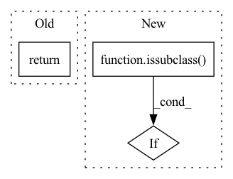

Pattern ID :21143

Before Change
dataset_doc = samples._root_dataset._doc
run_docs = getattr(dataset_doc, cls._runs_field())
return sorted(run_docs.keys())
@classmethod
def update_run_key(cls, samples, key, new_key):
After Change
keys = []
for key in run_docs.keys():
run_info = cls.get_run_info(samples, key)
if issubclass(run_info.config.run_cls, type):
keys.append(key)
else:
keys = run_docs.keys()
In pattern: SUPERPATTERN
Frequency: 3
Non-data size: 3
Instances
Fragment ID: 67801682
Project Name: voxel51/fiftyone
Commit Name: 611d248afe7533eea72916d751b136b1816c0c63
Time: 2023-03-02
Author: brimoor@umich.edu
File Name: fiftyone/core/runs.py
M Class Name: Run
N Class Name: Run
M Method Name: list_runs(3)
N Method Name: list_runs(2)
M Parent Class: Configurable
N Parent Class: Configurable
M File Name: fiftyone/core/runs.py
N File Name: fiftyone/core/runs.py
M Start Line: 326
M End Line: 326
N Start Line: 315
N End Line: 341
'>
Before Change
c_string = result.document.content
answer = qa(question, c_string, prev_qa=prev_qa)
answers.append(answer)
return list(zip(answers, search_results.results[:3]))
def summarise(self, input_text):
Perform summarisation on input text.
After Change
else:
search_results = self.search(question)
answers = []
if issubclass(self._store._doc_class, ChunkedDocument):
for chunk in search_results.top_chunks[:num_answers]:
answer = qa(question, chunk["chunk"], prev_qa=prev_qa)
answers.append((answer, chunk["search_result"]))
'>
Fragment ID: 67801684
Project Name: kiri-ai/kiri
Commit Name: 328d29867029b82b3c08f755e457c9fc5cb853a9
Time: 2021-01-08
Author: ojasaarkristo@gmail.com
File Name: kiri/core.py
M Class Name: Kiri
N Class Name: Kiri
M Method Name: qa(5)
N Method Name: qa(4)
M Parent Class:
N Parent Class:
M File Name: kiri/core.py
N File Name: kiri/core.py
M Start Line: 106
M End Line: 112
N Start Line: 87
N End Line: 118
'>
Before Change
elif issubclass(self._sympy_func, sympy.Integer):
return self._sympy_func(self._value)
elif isinstance(sympy.S.Half, self._sympy_func) :
return self._sympy_func()
elif issubclass(self._sympy_func, sympy.UnevaluatedExpr):
return self._sympy_func(self._value.item())
elif issubclass(self._sympy_func, sympy.Symbol):
After Change
elif issubclass(self._sympy_func, sympy.Integer):
return self._sympy_func(self._value)
elif issubclass(self._sympy_func, sympy.Rational):
if issubclass(self._sympy_func, sympy.core.numbers.Half):
return sympy.S.Half
else:
return self._sympy_func(int(self._numerator.item()), int(self._denominator.item()))
'>
Fragment ID: 67801685
Project Name: patrick-kidger/sympytorch
Commit Name: 0cb0417cdb86bcd97100e9a88e7c10a348db9cd0
Time: 2022-04-11
Author: pakamienny@devfair0428.h2.fair
File Name: sympytorch/sympy_module.py
M Class Name: _Node
N Class Name: _Node
M Method Name: sympy(2)
N Method Name: sympy(2)
M Parent Class: torch.nn.Module
N Parent Class: torch.nn.Module
M File Name: sympytorch/sympy_module.py
N File Name: sympytorch/sympy_module.py
M Start Line: 112
M End Line: 113
N Start Line: 113
N End Line: 118